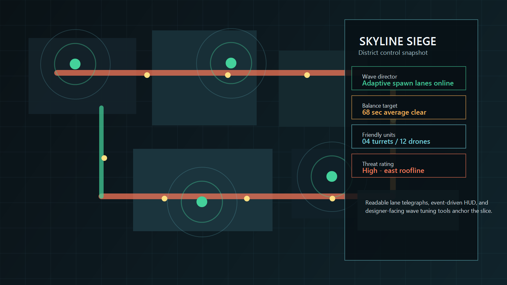
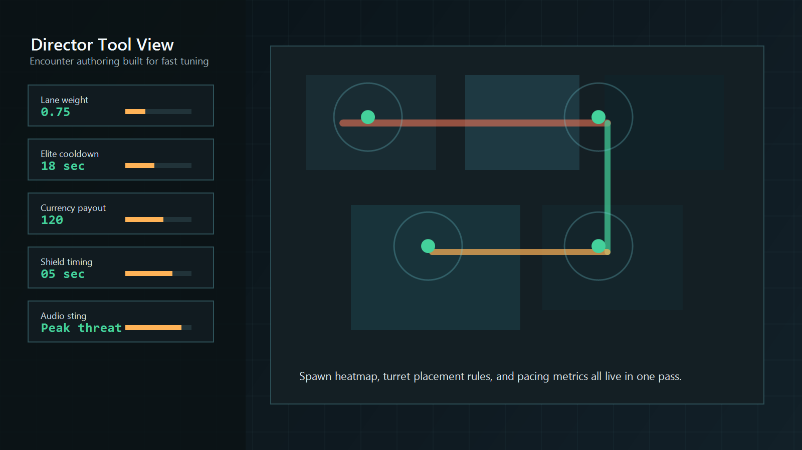

Sample flagship case study
Skyline Siege
This is sample portfolio content for a future flagship Unity case study. It shows the depth, structure, and tone the final project writeup can use once real production work is ready to publish.
Placeholder content: replace summary, role, metrics, screenshots, and links with a real flagship project later.



What I owned
- Built the encounter director that chooses lanes, elite timing, and reward pacing from tuneable data.
- Implemented enemy state logic for advancing, retargeting, shielding, and reacting to player interrupts.
- Designed the lane telegraph system so incoming pressure is readable before the screen gets busy.
- Connected combat events to HUD feedback, turret state indicators, and high-threat callouts.
- Created balancing panels that let designers adjust wave weight and cadence without code changes.
Challenge
The early build technically worked, but it failed the glance test. Playtesters lost track of which lane mattered, which turret state had changed, and why the encounter suddenly felt unfair once enemy counts rose.
How I solved it
I treated readability as a systems problem instead of a polish pass. The director now tags the highest-pressure lane before spawns peak, the HUD subscribes to the same event stream that drives enemy escalation, and turret states use a tighter palette with fewer ambiguous transitions. That reduced visual noise and made the combat loop easier to parse under pressure.
Outcome
The final slice held together across three districts, supported repeat balance passes without rewiring code, and gave playtesters a cleaner sense of cause and effect. The best result was not a single feature, but the fact that tuning pace and difficulty became fast enough to do every session.
Gallery